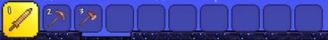
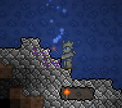
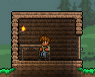

Вы начинаете игру, не с пустыми руками! (Подробности)
В инвентаре на хотбаре (в верхнем левом углу) вы найдете медную кирку, медный кинжал и медный топор. Иногда у этих предметов есть модификации, как отрицательные, так и положительные. Вращая колёсико мыши, вы можете переключаться между слотами хотбара. Также для переключения вы можете использовать клавиши 0-9 или кликать мышкой по необходимому предмету. В игре есть много других горячих клавиш, подробнее о которых можно посмотреть в настройках самой игры.
Переходим к типе предметов, которые выдаются в начале игры:
Морковка — предмет, позволяющий призвать кролика, первого питомца. Он будет такого же цвета, что и ваша рубаха (только в коллекционном издании).
Медный кинжал — ваше первое оружие, им вы можете убивать мобов.
Медная кирка — используется для удаления и добычи дохардмодных блоков почти всех видов, начиная от земли и заканчивая золотой/платиновой рудой. Чем лучше кирка, тем быстрее и больше типов материалов можно ей добыть. Также стоит отметить, что кирка не рубит деревья, которые сгенерированы изначально (для добычи сгенерированных в мире деревьев нужен топор или универсальный инструмент, включающий в себя функции топора), кирка срубает только поставленные игроком блоки древесины. Также в игре присутствует тип инструментов, аналогичных киркам — буры.
Топор — дает вам возможность рубить деревья, а также высокие грибы и кактусы — аналоги деревьев в разных биомах.
В первую очередь срубите дерево. Для того чтобы сделать это, подойдите к дереву, выберите в качестве инструмента топор и зажатием левой кнопки мыши бейте по самому низу дерева. Добытые таким образом блоки можно ставить левой кнопкой мыши. Чем выше дерево, тем больше древесины с него выпадет.
Также, срубив дерево, вы можете получить жёлуди. Сажая жёлуди, можно выращивать новые деревья. Жёлуди можно посадить только на траве. Чтобы вырасти, дереву нужно расстояние в 1 блок слева и справа.
Примечания
Не сажайте жёлуди слишком близко друг к другу!
Далее вам понадобится камень. Для того чтобы добыть камень, необходимо найти его залежи. Они встречаются среди земли и могут быть совсем недалеко от поверхности. Возьмите кирку, наведите курсор на блок и зажмите левую кнопку мыши. Блок выпадет, как и древесина.
В течение игрового процесса вы можете быть атакованы слизнями. Чтобы избавиться от врагов, повернитесь к ним и нажмите левую кнопку мыши, держа в руке любой из инструментов (обычно для этой цели используется оружие, так как инструменты наносят куда меньше урона). У некоторого оружия присутствует автоатака. После убийства слизня из него выпадет гель. Он используется для того, чтобы делать факелы и зелья, которые вскоре станут нужными предметами.
Когда вы запасётесь достаточным количеством дерева, настанет время сделать верстак (чтобы создать его, нужно 10 единиц любой древесины или её аналогов). Чтобы сделать его, нажмите ESC (или ту клавишу, на которую вы переназначили инвентарь, например, "E"), откроется инвентарь. В левом нижнем углу будет вертикальный список. Это предметы, которые вы можете создать. Выберите верстак (workbench) нажатием левой кнопки по его иконке, а затем перетащите в инвентарь. Ставится он так же, как и блок. Если открыть инвентарь рядом с верстаком, можно увидеть новые рецепты предметов. Самым лучшим вариантом будет создание деревянного лука и некоторого количества стрел, чтобы было легче защищаться от монстров. Обычные стрелы можно улучшить, если у вас есть факелы, благодаря которым можно сделать горящие стрелы, которые имеют больший урон. Также эти стрелы могут послужить источниками света, если ими выстрелить. Хорошим решением будет создание деревянного меча и использование его вместо медного кинжала. Также вы можете смастерить деревянную броню для небольшой защиты.
С наступлением вечера вам нужно будет укрытие, так как ночью на поверхности появляется множество сильных монстров. Для того чтобы сделать его, вам понадобится твёрдый материал, например древесина или камень. Двери и стены (плюс фоновые стены) будут препятствовать появлению монстров внутри вашего жилища. Прежде чем строить дом, начните с поиска плоского ландшафта, последовательно делайте «наброски» дома из собранных вами материалов.
Примечание
Помните, что лучше строить дом на месте вашего появления в мире, только на один блок ниже. В противном случае вы будете разрушать блоки на месте появления. Когда ваш персонаж будет убит, вы автоматически переместитесь на ту точку, на которой вы появились в начале игры.
Чтобы НИПы обжились в доме, необходимо наличие поставленной двери. Удалите три вертикальных блока (под рост персонажа) и поставьте на их месте дверь. После этого следует поставить фоновые стены в доме (каменные или деревянные). Фон дома должен быть полностью заполнен. Смастерите факел и поместите его внутри здания. Этот источник света необходим NPC для проживания. Вам также понадобятся одно рабочее место и один предмет комфорта (простейший вариант — стол и стул, но можно, например, кровать с верстаком) в вашем доме для NPC.
Поздравляем! Вы успешно построили ваше первое в Террарии убежище!